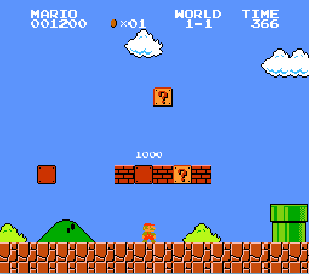
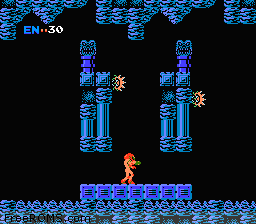

Hello! My name is Kevin. I'm a pretty avid gamer. On this webpage, I'd like to tell you about my top three favorite classic video games, and why they are my personal favorites.
| Description of Game | Image |
|---|---|
| Mario has always been one of my favorite games. Since it's release in 1985, many of us have fond memories of jumping over Goombas, kicking Koopa shells, and thwarting King Koopa himself: Bowser. Mario will always be a classic to me because it was one of the originals. It is a game that many people have played since they were children. The controls were smooth, the graphics were great for the time, and everyone I know still has nostalgia from that classic Mario tune even to this day. In my opinion, it will always be a beloved franchise that many will remember forever. I know I sure will. |  |
| Metroid is a space-themed action/adventure game originally made for the Nintendo Entertainment System in 1986. The game follows protagonist Samus Aran as she battles aliens, finds power-ups, and defeats the main villain of the planet Zebes: Mother Brain. This game was hailed as a classic due its focus on player exploration and its expansive game map in a 2D side-scroller game mode. It is personally a favorite of mine, as well as many of the other games in the franchise, and currently ranks number 2 in my top 3 games of all time. |  |
| The Legend of Zelda. What can be said about this game that isn't already well known? It's a masterpiece in every way. It starts off by throwing you into the world with nothing. You find a sword, and off you go on a grand adventure! This game was groundbreaking in the way that you got stronger by collecting items and defeating dungeons. Unlike Metroid, this game was a top-down adventure game rather than a 2D side-scroller. The goal of the game was to get strong enough to defeat the evil Ganon, who threatened to destroy the land of Hyrule. The classic adventure setting, overall nostalgia, and pure excitement this game gave me as a kid secures its spot at number 1 on my all-time favorite video games. | |
So there you have it. My top 3 all-time favorite video games. If you're a gamer as well, I hope you enjoyed my little list.
If you aren't a gamer, well, I hope you were at least entertained by a 21-year-old guy gushing about his geeky pastimes.
Thanks for reading, and happy gaming!